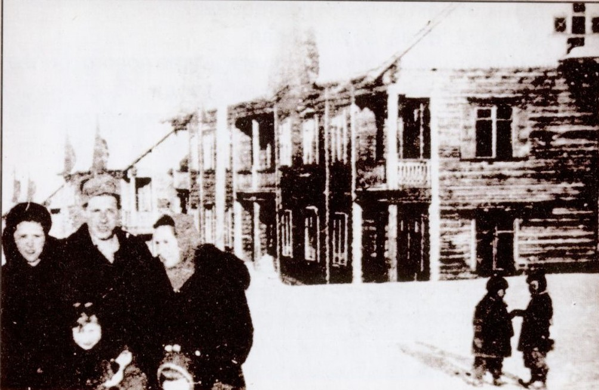

Новоуральск ведёт свою историю с 17 февраля 1941 года, когда он был основан как посёлок на базе завода по переработке и обогащению урана. Первый генеральный план посёлка создан Ленинградским проектным институтом - ГСПИ-11. Неотъемлемая черта закрытого атомграда-контур. В конце 1940-х - начале 1950-х его роль выполнял обычный деревянный забор около 2м в высоту, обвитый колючей проволокой.
Имелись проходная, ворота, шлагбаум, угловые вышки.За КПП - аккуратные двух-трёхэтажные "сталинки" с белой лепниной, здания не должны были бросаться в глаза, чтобы не стать объектами аэрофотосъёмки. Цветовая гамма - жёлтая или зелёная. Посёлок, а потом и город строился в лесном массиве. Архитекторы старались максимально сохранить естественную маскировку. В настоящее время город входит в число крупных промышленных центров Урала. Ведущее предприятие - ПАО "Уральский электрохимический комбинат".

Посёлок Постоянный. Фото 1942-1943 гг.